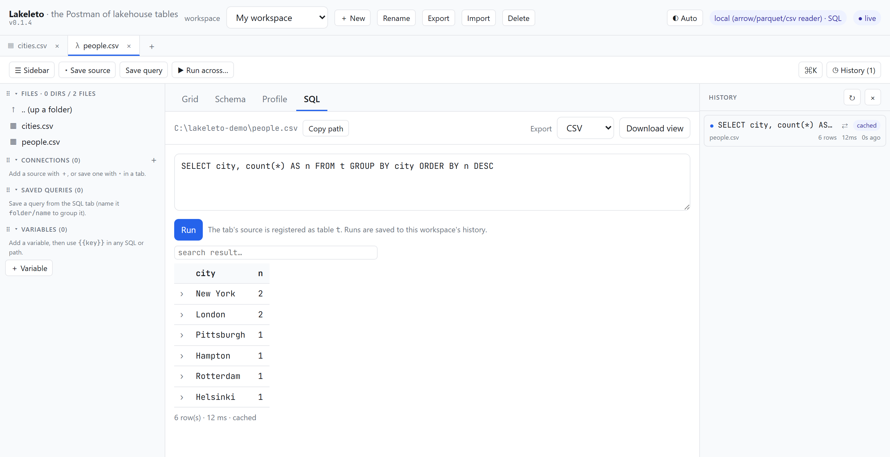
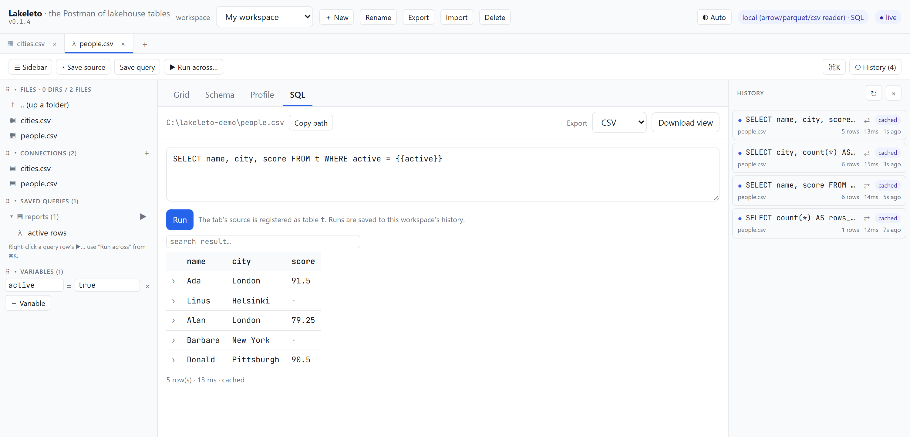

The throwaway script
Ten lines of pandas to answer a ten-second question, rewritten tomorrow for a different file in a different folder.
A Parquet file tells you nothing until something opens it. Lakeleto prints it back to you: the schema, the real rows, and what every column actually contains. One small program, running on your machine, on your data. Nothing is uploaded, because nothing leaves.
macOS, Linux and Windows. One executable — unzip it and run it. Nothing to sign up for.
| id Int64 | name Utf8 | city Utf8 | score Float64 | active Boolean |
|---|---|---|---|---|
| 1 | Ada | London | 91.5 | true |
| 2 | Grace | New York | 88.0 | false |
| 3 | Linus | Helsinki | · | true |
| 4 | Alan | London | 79.25 | true |
| 5 | Katherine | Hampton | 95.0 | · |
| 6 | Edsger | Rotterdam | 84.0 | false |
| 7 | Barbara | New York | · | true |
| 8 | Donald | Pittsburgh | 90.5 | true |
You want three ordinary things: what columns are in here, what the rows look like, and whether this column is full of nulls. Every route to them costs more than the question is worth.
Ten lines of pandas to answer a ten-second question, rewritten tomorrow for a different file in a different folder.
A notebook server, a warehouse connection or a cluster. A great many moving parts for a file already sitting on your laptop.
Convenient web viewers all want your file. When the data is customer records or under a compliance regime, that is simply not available to you.
Lakeleto starts a viewer on your machine and opens your browser at it. Every view below reads the same file on your own disk. The server is your laptop.
Every column, its type, whether it is nullable, and the exact row count. For Parquet that count is read straight from the footer rather than counted, so it is instant and it is exact.
Scroll the real rows. Click a header to sort, type in a column's filter box to narrow, drag to resize and reorder, click a cell to copy it. Only the rows on screen are fetched, so a file larger than memory still scrolls.
Per column: null percentage, distinct count, minimum, maximum and sample values. You see the empty column or the impossible maximum before you build anything on top of it.
Run read-only SELECT over the open table, powered by
DataFusion. Filters and sorts push down into the engine, so the answer is exact
rather than a sample of the first rows.
Save exactly what is on screen, filtered and sorted with hidden columns dropped, as CSV, JSON or Parquet. What you exported matches what you were looking at.
Tabs, saved queries, per-tab variables and a run history where every result is cached.
Reopen yesterday's query without re-scanning the file. A command palette
(Ctrl or Cmd + K) reaches all
of it from the keyboard.
Not a rendering of it. These are impressions of the v0.1.4 you can download above, doing its job on a local file — the same eight rows the sheet at the top of this page prints.

t.
reports/, and a variable the query on screen actually reads. Every run is cached, so reopening a result costs nothing.Files, table formats, and, because half of "a table" lives in a database, read-only database connections. All of it behind the same viewer.
Point it at a directory of Parquet parts, or at Hive-style
year=2024/month=03 folders, and it reads them as one table
with the partition keys as real columns.
Database connections are strictly read-only. Bucket reads use your own credentials from your own environment and pull bytes straight from your bucket to your machine, with ranged requests, so a remote Parquet file stays as browsable as a local one.
Lakeleto is a program on your computer reading a file on your computer. There is no Lakeleto account, no Lakeleto server in the path, and nothing to opt out of. That is what makes it usable on data you are not allowed to move.
Works air-gapped. The interface is bundled inside the binary. No CDN, no fonts to fetch, nothing to phone home to, so it runs on a locked-down CI box or on a plane.
Locked to a folder. Start it with a root directory and it refuses to read outside it. Expose it beyond localhost and a bearer token is required on every request.
Verifiable builds. Every released binary carries a cosign signature, a SHA-256 and SLSA build provenance, so you can check what you are about to run. That is not the same thing as an operating-system code-signing certificate, and Lakeleto does not have one yet — expect your OS to warn you on first launch, and see the FAQ for what it looks like.
# credentials come from your environment,
# exactly as the cloud SDKs expect them
export AWS_ACCESS_KEY_ID=…
export AWS_SECRET_ACCESS_KEY=…
# bytes go bucket → your machine
lakeleto schema s3://analytics/events.parquet
# browse the prefix in the viewer
lakeleto serve --root s3://analytics/warehouse/No Lakeleto service sits between you and that bucket. There is nothing for anyone to log, because nobody else is in the request path.
The viewer is the friendly way in. When you are scripting, the same answers print to stdout: no server, pipe-friendly, easy to drop into CI.
# open it in the browser
lakeleto open events.parquet
# columns, types, exact row count
lakeleto schema events.parquet
# the first five rows
lakeleto head events.parquet -n 5
# nulls, min and max from the footer,
# with no row scan at all
lakeleto profile --fast events.parquet# the open table is `t`
lakeleto query "SELECT city, count(*) n
FROM t GROUP BY city
ORDER BY n DESC" --file people.csv
# JSON out, straight into jq
lakeleto head people.csv -o json \
| jq '.[0]'Lakeleto is at v0.1.4 and the maintainers describe it as an early release, not a mature product. The core is real and the maintainers run it daily: the grid, schema, profile, SQL, export and the Parquet, CSV, Iceberg and Delta readers all work today.
You are getting it before it is polished, and your bug reports shape what gets fixed first. If you need something battle-tested for a critical pipeline this week, wait for a later release.
The tool you run on your own machine is open source under Apache-2.0, and that is not going to change.
A hosted, team-oriented edition is on the roadmap and would be the paid piece, but it is not built yet and nothing on this page depends on it. There is no pricing to quote because there is nothing to sell you yet.
Yes for browsing. The grid renders only the rows on screen and fetches windows as you scroll, and Parquet is read by row group, so file size is not bounded by memory.
For sorting and filtering across a very large file, the SQL engine does it exactly and without bound. Without SQL enabled, sorts and filters run over a capped working set, and the interface says plainly when you are looking at a partial view. It does not quietly show you a subset.
macOS on Apple Silicon and Intel, Linux on x86-64 and ARM64 statically linked, and Windows on x86-64. Each is a single executable. Unzip it and run it; there is no installer and no runtime to set up first.
Windows on ARM64 is not built — that one you compile from source today. And "run it" means from a terminal: you start it once with a command, and everything after that happens in your browser.
No. Every path is read-only: the file readers only read, SQL is restricted to
SELECT, and the database connectors cannot write. Export
creates a new file where you ask for one and never touches the source.
No. You start it once from a terminal, and from then on it is a normal window in your browser: click a file, scroll the rows, click a column heading to sort, type in a box to filter. The schema and profile views are just tables you read.
SQL is there when you want it and ignorable when you do not. Nothing in the grid, schema, profile or export views requires writing a query.
No, and we would rather you heard that here than from the warning. Windows SmartScreen says "Windows protected your PC — unknown publisher"; macOS says the developer cannot be verified. Nothing is wrong with the download. Lakeleto has no Authenticode certificate and no Apple notarization yet, and those cost money and an identity a project this young has not set up.
To get past it: on Windows, More info → Run anyway. On macOS, right-click the file in Finder and choose Open once — that offers an Open button the plain double-click does not.
The cosign signature and SHA-256 on every release are the real check, and they are a stronger one than a code-signing certificate: they tie the binary to the exact public build that produced it. They just are not the check your OS knows how to read.
Nothing. There is no account, no email address, and no licence key. The download is a release asset on GitHub: take the archive for your platform, unzip it, and run it.
You do give GitHub a request for a file, which is the ordinary cost of downloading anything. Nothing is asked of you by us, and nothing about the file you later open ever reaches anyone.
Download it and point it at a table. There is nothing to sign up for.
Free and open source, under Apache-2.0.